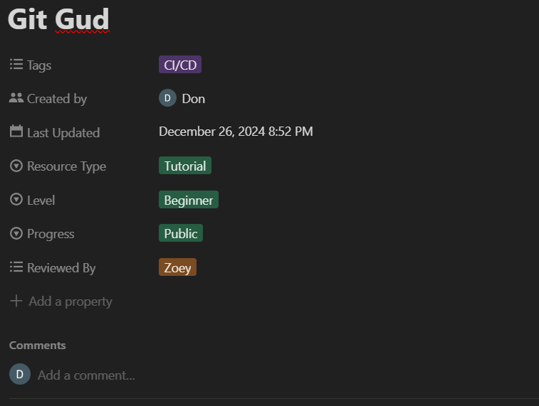

Don Ang
.Hack Training Executive Exco Candidate
A little about myself
Graduated in 2022
Passionate in building and teaching
Applying for the role:
Training & Curriculum Director
Technology & Google Developer Student Club (GDSC) Director
Why Training?

Experience & Contributions


What's in it for .Hack?
New initiatives and workshop ideas
Maintaing the .Hack Resource Repository
Collaborating with other depts on events
Why Tech?


Contributions

What's in it for .Hack?
Maintaining projects
Initiate new projects
Afterthought